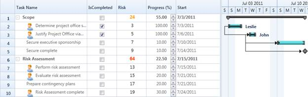

You can directly access the Gantt Grid columns and customize its appearance and type by defining the style info of the columns, after Gantt loads. The following code illustrates this:
|
[C#]
/// Hooking loaded event of Gantt this.Gantt.Loaded += new RoutedEventHandler(Gantt_Loaded);
/// Handling the loaded event of Gantt void Gantt_Loaded(object sender, RoutedEventArgs e) { /// Fetching the Progress Column from the Grid(Table) GridTreeColumn progColumn = this.Gantt.GanttGrid.Columns[5]; /// Changing the cell type of progress Column progColumn.StyleInfo = new GridStyleInfo { CellType = "UpDownEdit", UpDownEdit = new GridUpDownEditStyleInfo { MaxValue = 100, MinValue = 0, Step = 5 } };
/// Repopulating the GanttGrid to reflect the new changes this.Gantt.GanttGrid.InternalGrid.PopulateGridNodes(true); this.Gantt.GanttGrid.InternalGrid.InvalidateCells(); }
|

Figure 42: Customized Columns
Samples Link
To view samples:
1. Open Syncfusion Dashboard.
2. Select User Interface > WPF.
3. Click Run Samples.
4. Navigate to Gantt > Table Customization item > Customized Table sample.